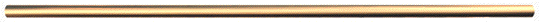

WORLD
WAR II
|
This is an effort of volunteers to transcribe the June 1946 World War II HONOR LIST of dead and missing, State of Kansas list. In it's time this list contained the latest and most complete data available on all military personnel who were killed or died, or became and remained missing, between the President's declaration of unlimited national emergency on May 27, 1941, and the cut-off date of this report, January 31, 1946
State Summary of War Casualties from World War II for Navy, Marine
Corps, and Coast Guard
Personnel from Kansas (NWCTM-24-WWIICASNAVY-KS)
---------------------------------------------------------------------
KSGENWEB INTERNET GENEALOGICAL SOCIETY COPYRIGHT NOTICE: In keeping with the KSGenWeb
policy of providing free information on the Internet, this data may be used by
non-commercial entities, as long as this message remains on all copied material. These
electronic pages cannot be reproduced in any format for profit or other gain. Copying of
the files within by non-commercial individuals and libraries is encouraged. Any other use,
including publication, storage in a retrieval system, or transmission by electronic,
mechanical, or other means requires the written approval of the file's author.
---------------------------------------------------------------------

WOUNDED IN ACTION OR DURING OPERATIONAL WAR MISSIONS
| B | C | D | E | F | G | H | I | J | K | L | M | Mc | N | O | P | Q | R | S | T | U | V | W | Y | Z |
GALBRAITH, Francis, Ensign, USNR. Mother, Mrs. Elizabeth Galbraith, Kansas City.
GALLAGHER, Michael G., SGT, USMCR. Father, Mr. Michael J. Gallagher, Chapman.
GAMBRILL, Carl M., PFC, USMC. Parents, Mr. and Mrs. George W. Gambrill, Westphalia.
GARDNER, Harold John, Seaman 2c, USNR. Wife, Marguerette Gardner, Sylvia.
GARRETT, Theodore Elden, Ensign, USNR. Wife, Mrs. Vivian L. Garrett, Shawnee.
GAULT, Delmar Hill, Fireman 1c, USN. Wife, Mrs. Luena Ellen Gault, Augusta.
GAVIN, Jack E., PFC, USMCR. Father, Mr. Walter M. Gavin, Galena.
GEORGE, Fred J., PFC, USMCR. Parents, Mr. and Mrs. James George, Kansas City.
GERMAN, Loran Elton, Chief Pharmacist's Mate, USN. Parents, Mr. and Mrs. Frank Marion German, Wellington.
GFELLER, Ghiles Omar, Torpedoman's Mate 3c, USNR. Parents, Mr. and Mrs. Sam T. Gfeller, Junction City.
GIACOMETTI, Girardo, Seaman 2c, USNR. Mother, Mrs. Julia Giacometti, Frontenac.
GIEBER, Cleo Allen, Fireman 2c, USNR. Parents, Mr. and Mrs. Russell Daniel Gieber, Ottawa.
GIEBLER, Walter J., PVT, USMCR. Parents, Mr. and Mrs. Martin Giebler, Catherine.
GIESE, D. J., Coxswain, USNR. Parents, Mr. and Mrs. Walter H. Giese, Virgil.
GILBERT, Allen Eugene, PVT, USMCR. Parents, Mr. and Mrs. Allen Gilbert, Coffeyville.
GILMORE, Charles Leo, Electrician's Mate 1c, USN. Parents, Mr. and Mrs. Charles Harrison Gilmore, Treece.
GITCHELL, Kenneth D., PFC, USMCR. Parents, Mr. and Mrs. James O. Gitchell, Hutchinson.
GLASS, Keith J., PFC, USMCR. Father, Mr. William H. Glass, Sr., Ellis.
GOHEEN, Leo Carl, Seaman 1c, USN. Parents, Mr. and Mrs. Earl Albert Goheen, Topeka.
GOOD, Charles Martin, Jr., 1st Lieutenant, USMCR. Parents, Rev. and Mrs. Charles Martin Good, Sr., Kiowa.
GORDON, Vernon Odell, PFC, USMCR. Mother, Mrs. Bertha Gordon, Wichita.
GORENTZ, Richard John, Seaman 1c, USNR. Parents, Mr. and Mrs. John Gorentz, Arma.
GORGES, Fred Mathew, Seaman 1c, USNR. Mother, Mrs. Rosa Agnes Gorges, Wichita.
GOWENS, Earl Alfred, Fireman 3c, USNR. Wife, Mrs. Beverly Gowens, Plains.
GRAHAM, Stanley Severance, Lieutenant (jg), USNR. Mother, Mrs. Jessie P. Graham, Winfield.
GRANDSTAFF, Melvin J., SGT, USMCR. Wife, Mrs. Melvin J. Grandstaff, Pertty.
GRASSO, Ross Michey, CPL, USMCR. Parents, Mr. and Mrs. Italo Grasso, West Mineral.
GRAUBERGER, Robert Nelson, Seaman 2c, USN. Guardian, Mr. William H. Grauberger, Kansas City.
GRAVES, Alvah F., PFC, USMCR. Parents, Mr. and Mrs. Alvah A. Graves, Wichita.
GRAY, Dennis B., PFC, USMCR. Mother, Mrs. Grace G. Helmlinger, Cherryvale.
GRAY, Vernon Eugene, PFC, USMCR. Mother, Mrs. Carrie O. Gray, Wichita.
GREATHOUSE, Rolland A., Jr., PFC, USMCR. Father, Mr. Rolland A. Greathouse, Garden City.
GREEN, Dale R., PVT, USMCR. Parents, Mr. and Mrs. Arthur L. Green, Lebanon.
GREEN, Harold L., Cpl, USMCR. Parents, Mr. and Mrs. Roy M. Green, Ludell.
GREEN, Richard Lee, Signalman 3c, USNR. Father, Mr. Otto Lee Green, Hutchinson.
GREEN, William C., SGT, USMC. Parents, Mr. and Mrs. Edward F. Green, Emporia.
GREER, Jefferson Gideon, Seaman 1c, USN. Father, Mr. Thomas A. Greer, Parsons.
GREGG, Odell D., PFC, USMCR. Father, Mr. Eldon M. Gregg, Dodge City.
GRIMM, Jay Vaughn, Seaman 1c, USNR. Parents, Mr. and Mrs. Benjamin W. Grimm, Sabetha.
GRITTS, Franklin, Photographer's Mate 3c, USNR. Wife, Mrs. Geraldine Gritts, Lawrence.
GROSKINSKY, Elmer Keith, Radioman 3c, USNR. Parents, Mr. and Mrs. Elmer C. Groskinsky, Benedict.
GROSS, LeRoy G., PFC, USMCR. Parents, Mr. and Mrs. Frank P. Gross, Gorham.
GUILFOYLE, William Maurice, PVT, USMCR. Parents, Mr. and Mrs. Joseph P. Guilfoyle, Greeley.
GWINNER, Robert William, Seaman 1c, USNR. Parents, Mr. and Mrs. Joseph Robert
Gwinner, Salina.
| B | C | D | E | F | G | H | I | J | K | L | M | Mc | N | O | P | Q | R | S | T | U | V | W | Y | Z |
HAIGH, Albert Sidney, Metalsmith 1c, USNR. Parents, Mr. and Mrs. Albert Edmund Haigh, Wichita.
HALE, James Robert, PVT, USMCR. Wife, Joyce M. Hale, McPherson.
HALL, Clayton O., PFC, USMCR. Parents, Mr. and Mrs. Guy C. Hall, Newton.
HALL, Laurence N., Platoon Sgt, USMC. Parents, Mr. and Mrs. Richard E. Hall, Minneola.
HALL, Lewis Raleigh, PVT, USMCR. Wife, Mrs. Myrtle M. Hall, Wichita.
HAMPTON, Charles Wayne, PVT, USMCR. Parents, Mr. and Mrs. Alva L. Hampton, Wichita.
HAN, Ernest Morrow, PFC, USMCR. Wife, Mrs. Mildred K. Han, McCune.
HANCHETT, Merle Leon, CPL, USMCR. Wife, Mrs. Marietta S. Hanchett, Cherryvale.
HANSFORD, Clifford Harley, CPL, USMCR. Parents, Mr. and Mrs. Terry Hansford, Topeka.
HANSHAW, Donald Hardison, PFC, USMCR. Wife, Mrs. Katherine M. Hanshaw, Winfield.
HANSON, Dale Bernard, Lieutenant (jg), USNR. Wife, Mrs. Lura M. Hanson, Fall River.
HANSON, Gerald A., CPL, USMC. Parents, Mr. and Mrs. John Hanson, Arkansas City.
HARR, Alfred Marvin, Seaman 2c, USNR. Wife, Mrs. Alma Flavel Harr, Topeka.
HARRIS, Elmer G., PVT, USMCR. Parents, Mr. and Mrs. Elmer Harris, Plains.
HARRIS, Glenn Edgar, Chief Gunner's Mate, USNR. Wife, Mrs. Viola Mildred Harris, Topeka.
HARRIS, Thomas Howard, Seaman 2c, USNR. Parents, Mr. and Mrs. Ernest Kime, Coffeyville.
HARRISON, Robert F., CPL, USMCR. Father, Mr. Robert L. Harrison, St. Francis.
HARRISON, William A., CPL, USMC. Wife, Mrs. William A. Harrison, Atchison.
HARSH, Robert M., PFC, USMC. Parents, Mr. and Mrs. Ray Harsh, Cassoday.
HARTZFELD, Melvin Chester, Lieutenant (jg), USNR. Wife, Mrs. Helen Marie Hartzfeld, Ashland.
HARVEY, Edgar, Seaman 1c, USNR. Parents, Mr. and Mrs. James E. Harvey, Topeka.
HARWOOD, Milferd A., PVT, USMC. Parents, Mr. and Mrs. William T. Harwood, Lawrence.
HARWOOD, Victor G., PVT, USMCR. Father, Mr. John W. Harwood, Wichita.
HATCH, Ernest B., PFC, USMC. Mother, Mrs. Margaret Wainscott, Wichita.
HATCH, Loman L., PVT, USMCR. Mother, Mrs. Margaret E. Wainscott, Wichita.
HATFIELD, Grover, Jr., SGT, USMC. Wife, Mrs. Grover Hatfield, Jr., Great Bend.
HATHAWAY, Wayne C., CPL, USMC. Parents, Mr. and Mrs. Kenneth V. Hathaway, El Dorado.
HAUK, John w., Jr., PFC, USMCR. Mother, Mrs. Bertha E. Hauk, Turner.
HAWBECKER, Donald L., Chief Cook, USMCR. Mother, Mrs. Erma Vogan, Manhattan.
HAWKINS, Glen LeRoy, PFC, USMCR. Wife, Mrs. Eliene M. Hawkins, Wichita.
HAYDEN, Oliver, Seaman 2c, USN. Father, Mr. Oliver A. Hayden, Kansas City.
HEAD, Herbert C., PVT, USMCR. Wife, Mrs. Herbert C. Head, Topeka.
HEATON, Harry Dewitt, Seaman 1c, USN. Parents, Mr. and Mrs. Earl R. Heaton, Wichita.
HEISER, Harold W., Jr., PFC, USMCR. Aunt, Mrs. Lida Doud, Ft. Scott.
HELUS, John J., PFC, USMC. Parents, Mr. and Mrs. John Helus, Ellsworth.
HENDERSON, Carl Richard, PFC, USMCR. Mother, Mrs. Cora Henderson, Urbana.
HENRIKSEN, Henry William, CPL, USMC. Wife, Mrs. Mary M. Henriksen, Ft. Dodge.
HENSHAW, John W., CPL, USMC. Parents, Mr. and Mrs. Myrle R. Henshaw, Leavenworth.
HERRING, Jay Auburn, Coxswain, USNR. Parents, Mr. and Mrs. Frank Leslie Herring, Vermillion.
HESS, Jay O., Assistant Cook, USMCR. Parents, Mr. and Mrs. Roy Hess, Waverly.
HIATT, Herman H., Jr., PFC, USMCR. Parents, Mr. and Mrs. Herman H. Hiatt, Kansas City.
HIBBERT, Perry Wallace, Jr., SGT, USMC. Mother, Mrs. Gertrude I. Arndt, Wichita.
HILL, Charles Clayton, Watertender 2c, USNR. Wife, Mrs. Eula May Hill, Wallace.
HILL, Raymond Edwin, Carpenter's Mate 3c, USNR. Wife, Mrs. Ruth Dixon Hill, Neodesha.
HILL, Robert Eugene, PFC, USMC. Mother, Mrs. Cora Meyers, Topeka.
HILYARD, Clarence, Jr., Seaman 2c, USNR. Parents, Mr. and Mrs. Clarence Hilyard, Hutchinson.
HISEROTE, Raymond Mooney, Seaman 1c, USNR. Wife, Mrs. Cecelia Alene Hiserote, Beloit.
HIXON, Richard D., PFC, USMCR. Parents, Mr. and Mrs. Henry H. Hixon, Altoona.
HOEME, Cecil Otto, Radarman 3c, USN. Father, Mr. Fred Walter, Buhler.
HOLLIS, Raymond Edward, PFC, USMCR. Father, Rt. Fred R. Hollis, Salina.
HOLLOPETER, Robert Francis, PFC, USMCR. Mother, Mrs. Mary A. Hollopeter, Wichita.
HOLLOWAY, George N., PFC, USMC. Mother, Mrs. Mabel E. Holloway, Wichita.
HOLLOWAY, William E., PFC, USMC. Parents, Mr. and Mrs. William M. Holloway, Arkansas City.
HOLMES, Guy Paul, PFC, USMCR. Mother, Mrs. Chessie G. Evans, Kansas City.
HOLT, Raymond Donald, Seaman 1c, USNR. Parents, Mr. and Mrs. Floyd R. Holt, Oswego.
HONEYMAN, Bill G., PFC, USMCR. Parents, Mr. and Mrs. Wright J. Honeyman, Topeka.
HONSTEAD, James Moore, Fireman 1c, USNR. Wife, Mrs. Pauline Alberta Honstead, Dighton.
HOOVER, James R., Capt., USMCR. Wife, Mrs. James R. Hoover, Olathe.
HOOVER, Poalia B., PFC, USMCR. Parents, Mr. and Mrs. Don C. Hoover, Phillipsburg.
HOPKINS, Russell C., PFC, USMCR. Parents, Mr. and Mrs. Paul H. Hopkins, Kansas City.
HORAN, Robert T., SGT, USMCR. Parents, Mr. and Mrs. Thomas Horan, Kansas City.
HOUX, Harold D., CPL, USMC. Parents, Mr. and Mrs. Frederick A. Houx, Independence.
HOWARD, Claude Melvin, Lieutenant (jg), USNR. Parents, Mr. and Mrs. Claude M. Howard, Sr., Kansas City.
HOWARD, Dale Edwin, Fireman 1c, USNR. Wife, Mrs. Mary Violet Howard, Kansas City.
HOWARD, Robert Charles, CPL, USMCR. Wife, Mrs. Daisy M. Howard, Kansas City.
HOY, Robert Edward, PFC, USMCR. Parents, Mr. and Mrs. Henry H. Hoy, Ft. Scott.
HUDGINS, Holder E., Jr., CPL, USMC. Wife, Mrs. Bertha L. Hudgins, Kansas City.
HUDSON, Stephen C., Jr., PFC, USMC. Parents, Mr. and Mrs. Stephen C. Hudson, Wichita.
HUERTER, Leonard G., PVT, USMCR. Parents, Mr. and Mrs. George A. Huerter, Seneca.
HUEY, Walter L., PFC, USMCR. Father, Mr. Frank L. Huey, Topeka.
HULETT, Walter R., CPL, USMCR. Wife, Mrs. Walter R. Hulett, Garnett.
HUND, Joseph A., Gunner's Mate 3c, USNR. Parents, Mr. and Mrs. Mike H. Hund, Leavenworth.
HUNT, Donald L., PVT, USMCR. Parents, Mr. and Mrs. Vance Hunt, Topeka.
HUNT, James D., PFC, USMC. Parents, Mr. and Mrs. Herman Hunt, Rolla.
HUNT, Robert Hollis, PFC, USMCR. Parents, Mr. and Mrs. Oness C. Hunt, Kansas City.
HUNTER, Maurice R., PVT, USMCR. Wife, Mrs. Maurice r. Hunter, Clay Center.
HURD, Robert Leonard, Signalman 3c, USNR. Parents, Mr. and Mrs. Leonard James Hurd, Galva.
HUXEL, Emil e., PFC, USMCR. Parents, Mr. and Mrs. Emil Huxel, Allen.
HYNDMAN, John Spencer, 2nd Lieutenant, USMCR. Parents, Mr. and Mrs. Eugene B. Hyndman, Wellington.
| B | C | D | E | F | G | H | I | J | K | L | M | Mc | N | O | P | Q | R | S | T | U | V | W | Y | Z |
ICENOGLE, Robert Edward, PFC, USMCR. Parents, Mr. and Mrs. Everett L. Icenogle, Kansas City.
INGENTHRON, Victor Marvin, PVT, USMCR. Parents, Mr. and Mrs. Albert J. Ingenthron, St. Marys.
INSKEEP, David Gibson, Pharmacist's Mate 1c, USNR. Parents, Mr. and Mrs. Stephen B. Inskeep, Manhattan.
IRELAND, Russell Lee, Soundman 3c, USNR. Wife, Mrs. Pauline Avis Ireland, Holton.
IRWIN, Clarence Melvin, PVT, USMCR. Father, Mr. Melvin E. Irwin, Valley Falls.
| B | C | D | E | F | G | H | I | J | K | L | M | Mc | N | O | P | Q | R | S | T | U | V | W | Y | Z |
JACK, Luther Harold, Seaman 1c, USNR. Guardian, Mrs. Hortense Patton, Wichita.
JACKMAN, Marvin D., PFC, USMCR. Parents, Mr. and Mrs. Henry H. Jackman, Parsons.
JACKSON, Eldon A., PVT, USMCR. Mother, Mrs. Pearl M. Jackson, Salina.
JACOBS, Charles G., PVT, USMC. Parents, Mr. and Mrs. Earl Jacobs, Lake City.
JACOBSON, Carl Elmer, PVT, USMCR. Wife, Mrs. Dorothy E. Jacobson, Ft. Scott.
JAMISON, Virgil John, Seaman 1c, USNR. Parents, Mr. and Mrs. Ernest John Jamison, Quinter.
JANKE, Herbert Allen, Gunner's Mate 2c, USNR. Wife, Mrs. Bena Mae Janke, Lehigh.
JANSSEN, William Franklin, Aviation Radioman 3c, USNR. Wife, Mrs. Treva Marie Janssen, Ness City.
JASTER, Lawrence J., PFC, USMCR. Parents, Mr. and Mrs. Berthold Jaster, Leavenworth.
JAYNES, Daniel Henry, Aerographer's Mate 1c, USNR. Wife, Mrs. Lavonna Jean Jaynes, Belleville.
JEFFERS, Curtis L., CPL, USMCR. Mother, Mrs. Maude A. Jeffers, Iola.
JENKINS, George M., 2nd Lieutenant, USMCR. Wife, Mrs. George M. Jenkins, Topeka.
JENNINGS, Roy Junior, Seaman 1c, USNR. Parents, Mr. and Mrs. Roy Franklin Jennings, Garden City.
JEWELL, James Edward, Gunner's Mate 3c, USN. Mother, Mrs. Bessie Smith, Blue Rapids.
JINDRA, Robert P., PFC, USMCR. Parents, Mr. and Mrs. Joe G. Jindra, Kansas City.
JOHNSON, Albert E., PFC, USMCR. Mother, Mrs. Stella E. Johnson, Perth.
JOHNSON, Cecil W., PVT, USMCR. Mother, Mrs. Mary Johnson, Pittsburg.
JOHNSON, Charles Edward, PFC, USMCR. Mrs. Dora L. Griffiths, Wichita.
JOHNSON, Howard W., PFC, USMCR. Parents, Mr. and Mrs. Howard Johnson, Kansas City.
JOHNSON, Loren Webster, Fire Controlman 3c, USNR. Wife, Mrs. Dorothea Louise Johnson, Wichita.
JOHNSON, Maurice Vincent, Seaman 1c, USNR. Mother, Mrs. Corine Virginia Johnson, Concordia.
JOHNSON, Meade T., SGT, USMC. Parents, Mr. and Mrs. Raymond O. Johnson, Concordia.
JOHNSON, Ned T., PVT, USMCR. Mother, Mrs. Alberta Johnson, Bird City.
JOHNSON, Raymond A., PFC, USMCR. Mother, Mrs. Lillie Johnson, Lawrence.
JOHNSON, Royal D., CPL, USMCR. Parents, Mr. and Mrs. George A. Johnson, Hays.
JOHNSON, William O., Jr., PFC, USMCR. Parents, Mr. and Mrs. William Johnson, Preston.
JOHNSTON, Walter Frederick, Machinist's Mate 2c, USNR. Mother, Mrs. Mary Margaret Johnston, Larned.
JONES, Clyde F., PFC, USMCR. Wife, Mrs. Clyde F. Jones, Topeka.
JONES, Donald B., CPL, USMCR. Mother, Mrs. Mary M. O'Dell, Kansas City.
JONES, Donald M., PFC, USMC. Mother, Mrs. Pearl O. Brownell, Topeka.
JONES, J. Forrest, Seaman 2c, USNR. Wife, Mrs. Ruth Elizabeth Jones, Lawrence.
JONES, Robert E. PFC, USMCR. Father, Mr. Virgil E. Jones, Wichita.
JONES, Russell A., PVT, USMCR. Parents, Mr. and Mrs. William J. Jones, Stafford.
JORDAN, James Albert, Fireman 1c, USNR. Parents, Mr. and Mrs. Percy B. Jordan, Neodesha.
JORDAN, Lee Harold, Seaman 2c, USNR. Wife, Mrs. Mary Maxine Jordan, Independence.
| B | C | D | E | F | G | H | I | J | K | L | M | Mc | N | O | P | Q | R | S | T | U | V | W | Y | Z |
KAGARICE, Richard D., PFC, USMC. Parents, Mr. and Mrs. Jesse E. Gagarice, Hutchinson.
KASS, Joseph Francis, Fireman 2c, USNR. Wife, Mrs. Mildred Grace Kass, Topeka.
KASTL, Don L., PFC, USMCR. Parents, Mr. and Mrs. Orange A. Kastl, Bronson.
KEARNS, Harvey Thomas, PVT, USMC. Parents, Mr. and Mrs. Raymond Kearns, Winfield.
KEARNS, Kenneth Gail, Seaman 2c, USNR. Parents, Mr. and Mrs. Frank E. Kearns, Kansas City.
KEELER, Claude Leo, Jr., Seaman 1c, USNR. Parents, Mr. and Mrs. Claude Leo Keeler, Seward.
KEENAN, Harold Patrick, Gunner's Mate 3c, USN. Brother, Mr. Lawrence Kennan, Seward.
KEIGHTLEY, Jack H., PFC, USMCR. Parents, Mr. and Mrs. Arthur C. Keightley, Kansas City.
KELLER, Bennie H., PFC, USMCR. Mother, Mrs. Emma Keller, Albert.
KELLY, Dayton D., PFC, USMC. Father, Mr. Lloyd T. Kelly, Onaga.
KELLY, Harold L., CPL, USMC. Aunt, Mrs. Nova Rader, Caldwell.
KELLY, Roy Raymond, CPL, USMCR. Parents, Mr. and Mrs. Ray S. Kelly, Wichita.
KENNEDY, Lawrence D., PFC, USMCR. Wife, Mrs. Lawrence D. Kennedy, Thayer.
KENNETT, Charles R., CPL, USMC. Wife, Mrs. Charles R. Kennett, Fredonia.
KENT, James E., Platoon Sgt, USMC. Parents, Mr. and Mrs. John E. Kent, Winfield.
KENWORTHY, Marvin Chester, Electrician's Mate 1c, USN. Father, Mr. Clarence Alton Kenworthy, Stockton.
KEPKA, Leo Joseph James, Radioman 3c, USNR. Parents, Mr. and Mrs. Joseph W. Kepka, Wilson.
KEPLINGER, Duane E., PVT, USMCR. Parents, Mr. and Mrs. Earl E. Keplinger, Topeka.
KERNS, Albert A., PFC, USMCR. Mother, Mrs. Iva Thomure, Sunflower.
KESLER, Richard W., PFC, USMCR. Parents, Mr. and Mrs. Leland W. Kesler, Winfield.
KESSLER, William Russell, PVT, USMCR. Father, Mr. James R. Kessler, Olathe.
KETTERMAN, Harold R., PFC, USMC. Mother, Mrs. Bessie M. Kitsmiller, Dodge City.
KEYES, James Cyril, PFC, USMCR. Guardian, Mr. William C. Norton, Wichita.
KIDD, Cleo Earl, Seaman 2c, USCG. Wife, Mrs. Bess Lavada Kidd, Wellington.
KILLION, Cleo C., PFC, USMCR. Wife, Mrs. Cleo C. Killion, Coffeyville.
KING, Bernard, SGT, USMC. Parents, Mr. and Mrs. William B. King, Kenbro.
KINION, Robert E., PFC, USMCR. Father, Mr. Eno C. Kinion, Galena.
KINNEY, William Emerson, Coxswain, USN. Parents, Mr. and Mrs. Alfred B. Kinney, Atchison.
KIRCHNER, George C., CPL, USMCR. Parents, Mr. and Mrs. George Kirchner, Elgin.
KISNER, Alphonse J., PFC, USMCR. Wife, Mrs. Alphonse J. Kisner, Hays.
KLAUS, Bernard, PFC, USMC. Parents, Mr. and Mrs. Joseph Klaus, Ellsworth.
KLINGLER, John Harold, Seaman 1c, USNR. Wife, Mrs. Ila Jean Klingler, Leavenworth.
KLOTZ, Edgar Glenn, Seaman 1c, USNR. Parents, Mr. and Mrs. Miran G. Klotz, Englewood.
KNACKSTEDT, Merville George, Ensign, USNR. Wife, Mrs. Myrtle Dessa Knackstedt, Conway Springs.
KNAPP, Glenn LeRoy, Pharmacist's Mate 2c, USNR. Father, Mr. Fred L. Knapp, Tonganoxie.
KNOLL, Raymond A., Platoon Sgt, USMC. Mother, Mrs. Catherine Knoll, Collyer.
KNOUPF, George James, Jr., Aviation Ordnanceman 3c, USNR. Father, Mr. George James Knoupf, Kansas City.
KOCH, Henry F., SGT, USMCR. Mother, Mrs. Flora Bracken, Ozawkie.
KOROSAC, Frank Matt, Boatswain's Mate 2c, USN. Parents, Mr. and Mrs. Roman Korosac, Kansas City.
KRAFT, Leland F., PFC, USMC. Parents, Mr. and Mrs. Edward Kraft, Wichita.
KRAPES, Glenn Huber, Apprentice Seaman, USNR. Father, Mr. George B. Krapes, Kansas City.
KREIDER, Thomas William, Seaman 1c, USNR. Parents, Mr. and Mrs. John B. Kreider, Horton.
KROPF, Loran A., CPL, USMCR. Parents, Mr. and Mrs. Fred A. Kroupf, Wamego.
KROTZINGER, Jacob C. A., Jr., SGT, USMC. Mother, Mrs. Minnie M. Krotzinger, Marysville.
KUFFLER, Thomas F., SGT, USMC. Wife, Mrs. Thomas F. Kuffler, Parsons.
KURTZ, Donald Robert, PVT, USMCR. Parents, Mr. and Mrs. Elmer C. Kurtz, Gardner.
| B | C | D | E | F | G | H | I | J | K | L | M | Mc | N | O | P | Q | R | S | T | U | V | W | Y | Z |
La BARGE, Charles Lee, Seaman 1c, USNR. Parents, Mr. and Mrs. Leo La Barge, Clyde.
LABESKY, Frank A., PFC, USMC. Father, Mr. August Labesky, Kansas City.
LABOUNTY, Melvin Paul, Torpedoman's Mate 1c, USN. Parents, Mr. and Mrs. Francis Labounty, Clyde.
LAIZURE, James Robert, Seaman 2c, USN. Parents, Mr. and Mrs. James Christopher Laizure, Hallowell.
LA MARR, Harvey W., PVT, USMCR. Wife, Mrs. Lela P. LaMarr, Garden City.
LAMPE, Raymond N., Gunnery Sgt, USMC. Mother, Mrs. Helen Lampe, St. Francis.
LANDIS, Daniel I., PVT, USMCR. Parents, Mr. and Mrs. Ira J. Landis, Wichita.
LANDRUM, Leroy Hubbard, PVT, USMCR. Wife, Mrs. Dorothy I. Landrum, Kansas City.
LATAPIE, George Samuel, PVT, USMCR. Mother, Mrs. Ethel M. Mitchell, Kansas City.
LATTNER, Wendolyn Henry, Jr., Coxswain, USN. Mother, Mrs. Bertha Cosgrove Lattner, Olathe.
LAYMAN, John Edwin, Fireman 2c, USNR. Mother, Mrs. Ella Layman, Bonner Springs.
LAYSON, Robert O., PFC, USMCR. Father, Mr. Robert C. Layson, Olathe.
LEACH, Ray John, Seaman 1c, USNR. Wife, Mrs. Dorothy Mae Leach, Parsons.
LEACH, Wallace E., PVT, USMCR. Parents, Mr. and Mrs. Earl B. Leach, Wichita.
LEACHMAN, Harold N., PFC, USMC. Parents, Mr. and Mrs. Thomas E. Leachman, Boyle.
LEASE, Clifford W., PFC, USMC. Parents, Mr. and Mrs. George W. Lease, Osawatomie.
LEE, James Keller, PFC, USMC. Guardian, Mr. and Mrs. Leonce W. Brown, Wathena.
LEIBBRANDT, Harold M., PFC, USMCR. Parents, Mr. and Mrs. William F. Leibbrandt, St. Francis.
LEIGAN, Charles E., CPL, USMCR. Father, Mr. William E. Leigan, Great Bend.
LEIGH, Robert Howard, Seaman 1c, USNR. Mother, Mrs. Ruth Helen Leigh, Council Grove.
LEMMON, John Melvin, PFC, USMCR. Parents, Mr. and Mrs. Charles W. Lemmon, Pittsburg.
LENHART, William, Jr., Aviation Chief Machinist's Mate, USN. Parents, Mr. and Mrs. George William Lenhart, Oakhill.
LEVINGS, Damian Charles, Seaman 2c, USN. Parents, Mr. and Mrs. George Levings, Topeka.
LEWIS, Bobbie Dean, SGT, USMC. Wife, Mrs. Annabelle L. Lewis, Wichita.
LICKTEIG, Donald J., CPL, USMC. Parents, Mr. and Mrs. Andrew W. Lickteig, Garnett.
LIGHT, Harold G., PFC, USMCR. Father, Mr. Simon P. Light, Wichita.
LIGHT, Paul L., Platoon Sgt, USMC. Mother, Mrs. Harley Kernal, Goodland.
LINN, Roy Charles, Lieutenant, USNR. Mother, Mrs. Martha Josephine Linn, Topeka.
LITTRELL, Robert Thomas, PFC, USMCR. Parents, Mr. and Mrs. Harold H. Littrell, Winfield.
LIVENGOOD, Guy Leonard, PFC, USMCR. Parents, Mr. and Mrs. Guy L. Livengood, Concordia.
LOGAN, Samuel S., Capt., USMCR. Mother, Mrs. Mary E. Logan, Kansas City.
LOHFINK, LeRoy, PFC, USMCR. Mother, Mrs. Elizabeth Lohfink, Sublette.
LONEY, James M., PFC, USMC. Parents, Mr. and Mrs. James M. Loney, Sr., Marion.
LONEY, Theodore Harper, PFC, USMCR. Parents, Mr. and Mrs. James M. Loney, Marion.
LONG, Charles W., PFC, USMCR. Mother, Mrs. Anna Long, Linn.
LONG, David W., PFC, USMCR. Mother, Mrs. Bertha Long, Wichita.
LONG, Donald Ernest, Seaman 1c, USN. Father, Mr. Charles Newton Long, Leon.
LOPEZ, Ambrosio R., PFC, USMCR. Mother, Mrs. Damacia Lopez, Emporia.
LORFING, Gerald Fredrick, Seaman 2c, USNR. Parents, Mr. and Mrs. Emil Lorfing, Kansas City.
LOUIS, Gerald Wayne, Hospital Apprentice 1c, USNR. Parents, Mr. and Mrs. Roy Louis, Wichita.
LOWER, Robert L., PVT, USMCR. Father, Mr. Cecil E. Lower, Chanute.
LOWRY, Ford Wilks, Electrician's Mate 2c, USNR. Parents, Mr. and Mrs. Wesley Homer Lowry, Great Bend.
LOWRY, Gordon Kemmery, Lieutenant (jg), USNR. Wife, Mrs. Margaret Huffman Lowry, Topeka.
LUCAS, Clifford K., SGT, USMCR. Mother, Mrs. Celesta Lucas, Caldwell.
LUTHI, Dale Duane, Radioman 3c, USNR.. Parents, Mr. and Mrs. Albert Luthi, Wakefield.
LYDA, Kenneth V., PFC, USMCR. Parents, Mr. and Mrs. Henry M. Lyda, Caldwell.
LYON, Edwin Clair, CPL, USMCR. Mother, Mrs. Mary Lyon, Havana.
LYSAUGHT, James Neill, Lieutenant (jg), (Medical Corps), USNR. Wife, Mrs. Alice Lorraine Lysaught, Ottawa.
| B | C | D | E | F | G | H | I | J | K | L | M | Mc | N | O | P | Q | R | S | T | U | V | W | Y | Z |
MACKEY, Billy Lee, Seaman 2c, USN. Father, Mr. John W. Mackey, Emporia.
MADDEN, Clyde Loyal, PVT, USMCR. Wife, Mrs. Edna J. Madden, Garden City.
MAHANY, Charles Edward, Seaman 1c, USNR. Wife, Mrs. Vera Jeanne Mahany, Kansas City.
MANGUS, Donald C., CPL, USMCR. Mother, Mrs. Alean First, Topeka.
MANSFIELD, James E., CPL, USMCR. Wife, Mrs. James E. Mansfield, Wellington.
MARGRAVE, Robert Howard, PFC, USMCR. Parents, Mr. and Mrs. Orville F. Margrave, Kansas City.
MARLIN, Sidney, 1st Lieutenant, USMCR. Mother, Mrs. Raphael Marlin, Atchison.
MARMIE, Robert K., CPL, USMC. Mother, Mrs. Mary Marmie, Great Bend.
MARTIN, Charles A., Jr., Staff Sgt., USMCR. Wife, Mrs. Kathleen M. Martin, Coffeyville.
MARTIN, Max Miller, Lieutenant (jg), USNR. Wife, Mrs. Elizabeth B. Martin, Grinnell.
MASON, Cleland S., Jr., PFC, USMCR. Wife, Mrs. Margaret L. Graves, Salina.
MASSEY, Floyd Wilson, Seaman 2c, USNR. Wife, Mrs. Verba Marie Massey, Willis.
MAST, Claude Porter, PFC, USMCR. Wife, Mrs. Loraine A. Mast, Columbus.
MATHEWS, James William, Storekeeper 2c, USNR. Parents, Mr. and Mrs. William J. Mathews, Bethel.
MATHIA, Homer L., PFC, USMCR. Mother, Mrs. Ottie Mathia, DeSoto.
MATTER, Frederick W., SGT, USMCR. Parents, Mr. and Mrs. William H. Matter, Bonner Springs.
MATUJEC, James, Gunnery Sgt., USMCR. Parents, Mr. and Mrs. Joseph Matujec, Kansas City.
MAUPIN, Donald Charles, PFC, USMC. Mother, Mrs. Bessie Meyer, Kansas City.
MAXFIELD, Robert Eugene, Gunner's Mate 3c, USNR. Parents, Mr. and Mrs. John Ernest Maxfield, Wichita.
MAXSON, Embree Willard, 1st Lieutenant, USMCR. Parents, Mr. and Mrs. Roscoe C. Maxson, Coffeyville.
MAXWELL, Charles Robert, Pharmacist's Mate 2c, USN. Mother, Mrs. Elsie Irene Kyle, Topeka.
MAXWELL, Marion Edwin, PFC, USMCR. Daughter, Miss Constance D. Maxwell, c/o Mrs. Virginia Maxwell, Wichita.
MAYNARD, Rolland Jerrold, Seaman 1c, USNR. Mother, Mrs. Avis Lillian Maynard, Hutchinson.
Last Updated: Thursday, May 01, 2003 21:30:54
Back to KSGenWeb Digital Library
Back to KSGenWeb State Index Page
HOME PAGE for KANSAS STATE LIBRARY
An Extra special thanks to Blue Skyways, Home page for Kansas State Library, for donating space for the many KSGenWeb pages.
Page Design, HTML Coding, and Layout Copyright ©1998, 1999 by Kenneth Thomas
Background and KSGenWeb logo were designed and are copyrighted by
Tom & Carolyn Ward
for the limited use of the KSGenWeb Project.
Permission is granted for use only on an official KSGenWeb page.